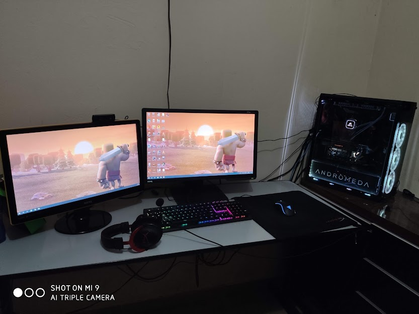

Post #1
Meu primeiro emprego foi na fábrica da Heineken localizada aqui em Araraquara, fui auxiliar de manufatura e trabalhei lá por dois anos. Tive alguns cursos, brigadista, máscara de oxigênio e trabalho em altura. Saí de lá em 2014 e comecei a trabalhar na Universidade de Araraquara como manobrista, depois disso fui inspetor de alunos e hoje exerço o cargo de auxiliar administrativo. Trabalho por fora com computadores, faço formatações e manutenções. Sempre gostei muito de lidar com Hardware e Software. Faço o curso de Sistemas da Informação pela Uniara (Universidade de Araraquara) e busco algum emprego nessa área, para aprender mais e estar sempre agregando mais a empresa!